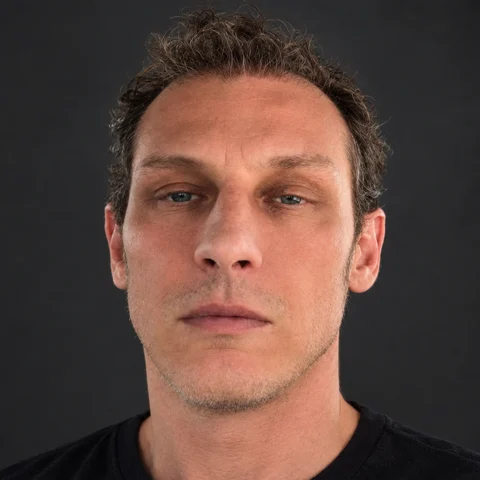

Page language: Italiano English Français Deutsch
Who is behind FAIND
Last updated: 2 October 2026
FAIND – Flash AI News Daily is an independent editorial project born in Sicily, Italy. There is no publishing group and no AI company behind it: there is one person, with a name and a surname, and a method stated in the open.

Paolo Buono
Graphic designer · Creator and manager of FAIND · Caltanissetta, Sicily
A graphic designer for over twenty years and a technology enthusiast, he has used artificial intelligence since day one. He created FAIND, chooses its sources, shapes its layout and is accountable for what is published. Write to him at info@faind.org.
Interview with Paolo Buono, creator of FAIND
Who is behind an artificial intelligence news site, and why did he build it? We asked him directly.
Who is Paolo Buono?
“I am a graphic designer: I have been doing this job for more than twenty years and I live in Caltanissetta, Sicily. I have always been passionate about technology and I try to keep up with everything that changes the way we design, communicate and work. FAIND is where those two things meet: a designer's eye and a curiosity for innovation.”
How long have you been using artificial intelligence?
“Since the first day I heard about it. I subscribed to the main AI services, put them to the test, followed them update after update and used them in every field, at work and beyond. I don't talk about AI from hearsay: these are tools I use every day.”
What questions did you ask yourself while using AI?
“The more I used it, the more I found myself asking questions that I believe most people share. They are the same questions FAIND tries to answer every day, with news and with sources:”
- How can I use artificial intelligence in my everyday work? Tools and guides →
- Will AI take our jobs? Which professions will change and which new ones will appear? AI jobs →
- How can AI be used in e-commerce and online sales? Top stories →
- Which is the best AI among ChatGPT, Claude and Gemini, and which subscription is worth it? Subscription prices →
- How do you create images, video and music with artificial intelligence? Videos →
- How will AI change medicine, education, the home and the environment? Focus →
- Is AI safe? What do the laws say, starting with the EU AI Act? Top stories →
“Nobody has all the answers, and those who claim to usually have something to sell. But following the right news, every day, is the best way to form your own view.”
Why is it important to keep up with artificial intelligence?
“Because the future runs through it, and that is undeniable. Artificial intelligence is entering every profession, and those who understand it start with an advantage. Keeping up is no longer a choice but a necessary path for anyone who works, studies or runs a business: every week brings new models, new tools and new rules, and standing still means falling behind.”
Why was FAIND created?
“It was born first of all from a need of my own. To follow what was new in AI I had to go through dozens of different sites, blogs and channels every day, in several languages. I wanted one place where the news was in order, hour by hour, with the source clearly visible. It didn't exist the way I wanted it, so I built it. Then I realised that many people have the same need.”
Who is FAIND for?
“For anyone who wants to understand what is happening in artificial intelligence without spending hours on it: professionals, creatives, students, entrepreneurs, the simply curious. You don't need to be an expert. In a few minutes you find the day's news, videos from the most followed creators, the most in-demand jobs in the field and the prices of AI subscriptions.”
What makes FAIND different from other AI news sites?
“It is free, with no advertising, no sign-up and no profiling cookies. Every story shows the outlet that published it and links to the original article: we don't copy, and we don't have other people's articles rewritten by an AI. And when a story is picked up by several outlets we show it, so you can see at a glance what really matters.”
Why FAIND exists
Every day more AI news comes out than anyone can follow: company announcements, studies, laws, new tools, changing prices. FAIND was created to do one simple thing: line up the news, hour by hour, always saying where it comes from, so readers can get the picture in a few minutes and go to the original article when they want to know more.
It works like a flash news agency: headline, a few lines, source. In Italian, with the option to read stories in English, French and German too.
How we work
- Hand-picked sources. Italian and international news outlets, the official blogs of AI companies and selected YouTube channels. The list is public in the site's code.
- Automatic collection every hour. A program reads the sources, keeps only what concerns artificial intelligence and sorts the stories by sector.
- One story, several voices. When several outlets report the same story, FAIND groups them into a single card and shows who else is covering it.
- “Top story” has a precise meaning. A story becomes a top story when it is covered by at least three different sources, or when the editor flags it.
- Jobs and prices. The ranking of the most in-demand AI roles comes from public job ads from the last 30 days; the price table shows official list prices with the date they were last checked.
Our rules
- The source, always. Every story carries the name of the outlet and a link to the original article.
- We don't copy. We publish only the headline, a short excerpt and the preview image: the full article is read on the site of those who wrote it, who own the rights.
- No AI-rewritten articles. We don't use artificial intelligence to rework other people's texts and pass them off as ours.
- No advertising, no profiling cookies, no paid content. The site can be read without signing up. Details are on the Privacy and legal notes page (in Italian).
- Automated, and we say so. The selection of stories is largely automatic and we state it openly: that is why we always point to the source, which remains responsible for its own content.
Independence and support
FAIND receives no payment from the companies it covers and publishes no sponsored content. The project is free and runs on the work of the person who manages it; those who find it useful can support it with a voluntary donation via PayPal, using the button on the site.
Corrections and contact
Found a mistake, a story filed under the wrong sector or a broken link? Are you the author of a piece of content and want it removed or changed? Write to info@faind.org or use the contact form on the home page: reports are read by Paolo Buono and corrections are made as soon as possible.
To stay up to date: the Telegram channel @faindnews and free RSS feeds.